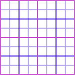

1. Основные понятия
Canvas — это HTML элемент, использующийся для рисования графики средствами языков программирования (обычно это JavaScript). Он может, к примеру, использоваться для рисования графиков, создания фотокомпозиций, анимаций и даже обработки и рендеринга видео в реальном времени.
Изображение ниже является примером использования <canvas>.
Пример того, что вы сможете сделать, изучив технологию Canvas.
Впервые <canvas> использовался компанией Apple для создания Mac OS X Dashboard, а затем был реализован в Web-браузерах. На сегодняшний день все основные браузеры поддерживют работу с <canvas>. Тег <canvas> часть спецификации WhatWG Web applications 1.0 также известной как HTML5.
<canvas id="tutorial" width="150" height="150"></canvas>
Он выглядит как элемент <img>, но его отличие в том, что он не имеет атрибутов src и alt. Элемент <canvas> имеет только два атрибута - ширину и высоту. Оба они не обязательны и могут быть выставлены с использованием свойств DOM. Если атрибуты высоты и ширины не установлены, canvas будет по умолчанию шириной 300 пикселей и в высоту 150 пикселей. Вы так же можете выставить размеры произвольно в CSS, но во время рендеринга изображение будет масштабироваться в соответствии с его размером и ориентацией.
Атрибут id не специфичен для элемента <canvas>, но он может быть применен по умолчанию в атрибутах HTML, так как он может быть использован (почти) для любого элемента HTML (так же как класс). Это всегда отличная идея использовать id, так как это позволяет намного проще идентифицировать наш элемент в сценарии.
2. Запасное содержимое
Из-за того, что старые браузеры (в особенности, версии Internet Explorer раннее чем 9) не поддерживают элемент <canvas>, Вам следует предоставить запасное содержимое для отображения этими браузерами.
Это очень просто: всего лишь предоставляем альтернативное содержимое внутри элемента <canvas>. Браузеры, которые не поддерживают <canvas> проигнорируют container и отобразят запасное содержимое этого тега. Браузеры, которые поддерживают <canvas> проигнорируют запасное содержимое, и просто нормально отобразят canvas.
Например, можем предоставить текстовое описание содержимого canvas или предоставить статичное изображение динамически отображаемого содержимого. Это может выглядеть как-то так:
<canvas id="stockGraph" width="150" height="150">
current stock price: $3.15 +0.15
</canvas>
<canvas id="clock" width="150" height="150">
<img src="images/clock.png" width="150" height="150" alt=""/>
</canvas>
В отличии от элемента <img>, элемент <canvas> требует закрывающийся тег (</canvas>). Если этот тег не предоставлен, остаток документа будет считаться запасным контентом и не будет отображен.
Если запасной контент не нужен, простой <canvas id="foo" ...></canvas> полностью совместим со всеми браузерами, что поддерживают <canvas>.
3. Рендеринг содержимого
Элемент <canvas> в документе создается с фиксированным размером элемента для рисования, который может иметь один или несколько контекстов для рендеринга, создавая и манипулируя содержимым для показа. В данном руководстве сфокусируемся на 2D рендеринге. Другие контексты могут предоставлять разные типы рендеринга, к примеру WebGl использует 3D контекст основанный на OpenGL ES.
Холст изначально пустой и прозрачный. Первым делом скрипт получает доступ к контексту и отрисовывает его. Элемент <canvas> имеет метод getContext(), используется для получения контекста визуализации и ее функции рисования. getContext() принимает один параметр, тип контекста. Для 2D графики, которая охвачена этим руководством будем использвать метку "2d".
var canvas = document.getElementById('tutorial');
var ctx = canvas.getContext('2d');
Мы находим элемент canvas по идентификатору, а затем вызываем метод getContext() с единственным параметром - строкой 2d. Если getContext() возвращает ответ, получаем 2D-контекст холста для добавления объектов.
Ранее уже упоминалось, что в браузерах, которые не поддерживают <canvas> отображается запасное содержимое. Но помимо этого, определить, поддерживает ли браузер canvas, можно прямо из кода, проверив наличие метода getContext(). Код с запасным содержимым, который приводили Выше, становится следующим:
var canvas = document.getElementById('tutorial');
if (canvas.getContext){
var ctx = canvas.getContext('2d');
// drawing code here
} else {
// canvas-unsupported code here
}
4. Скелет шаблона
Здесь минимальный шаблон, который будем использовать как начальную точку для дальнейших примеров.
<!DOCTYPE html>
<html>
<head>
<title>Canvas tutorial</title>
<script type="text/javascript">
function draw(){
var canvas = document.getElementById('tutorial');
if (canvas.getContext){
var ctx = canvas.getContext('2d');
}
}
</script>
<style>
canvas {
background-color: rgb(236,237,237);
border: solid #DE5363;
}
</style>
</head>
<body onload="draw();">
<canvas id="tutorial" width="250" height="150"></canvas>
</body>
</html>
Вставка скрипта внутрь HTML не является хорошей практикой. Помните об этом!
Скрипт вызывает функцию draw(), которая выполнится, когда страница закончит загрузку. Это делается путем события load в документе. Эта функция может быть вызвана как единожды, так и с помощью данных методов window.setTimeout(), window.setInterval(), или любым другим обработчиком события, когда страница будет загружена.
Вот как шаблон будет выглядеть в действии:
Размер холста можно вычислить программно через свойства canvas.width и canvas.height.
Рассмотрим следующий пример, на котором увидим область с чёрным прямоугольником. Это и есть тот самый холст, на котором нарисован прямоугольник, размеры которого равны размерам элемента canvas. Если бы не рисовали чёрный прямоугольник, то у нас был бы прозрачный холст. Размеры задаются в пикселях, а отсчёт идёт от верхнего левого угла. На холсте можно рисовать различные фигуры. Можно указать отрицательные значения для координат, ошибки не произойдёт, но смысла в этом нет - фигуры не будут видны на экране.
<canvas height='320' width='480' id='first_example'>Пример</canvas>
<script>
var canvas = document.getElementById("first_example");
var context = canvas.getContext('2d');
context.fillRect(0, 0, canvas.width, canvas.height);
</script>
5. Прямоугольники
Перед тем, как начнем рисовать, нам нужно поговорить о сетке canvas или координатной плоскости. Наш HTML каркас включал в себя элемент canvas 250 пикселей в ширину и 150 пикселей в высоту. Ниже можно увидеть canvas с сеткой, накладываемой по умолчанию. Обычно 1 единица на сетке соответствует 1 пикселю на canvas. Начало координат этой сетки расположено в верхнем левом углу в координате (0,0). Все элементы размещены относительно этого начала. Таким образом, положение верхнего левого угла синего квадрата составляет х пикселей слева и у пикселей сверху, на координате (х, у).

В отличие от SVG,canvas поддерживает только одну примитивную фигуру: прямоугольник. Все другие фигуры должны быть созданы комбинацией одного или большего количества контуров (paths), набором точек, соединенных в линии. К счастью в ассортименте рисования контуров у нас есть функции, которые делают возможным составление очень сложных фигур.
Для начала, давайте посмотрим на простой пример, который рисует два пересекающихся прямоугольника, один из которых имеет прозрачность alpha. Далее изучим, как это работает.
<!DOCTYPE html>
<html>
<head>
<script type="application/javascript">
function draw() {
var canvas = document.getElementById("excanvas");
if (canvas.getContext) {
var ctx = canvas.getContext("2d");
ctx.fillStyle = "rgb(238, 16, 68)";
ctx.fillRect (10, 10, 55, 50);
ctx.fillStyle = "rgba(0, 0, 0, 0.5)";
ctx.fillRect (30, 30, 55, 50);
}
}
</script>
<style>
canvas {
background-color: rgb(236,237,237);
border: solid #DE5363;
}
</style>
</head>
<body onload="draw();">
<canvas id="excanvas" width="250" height="150"></canvas>
</body>
</html>
После создания объекта context пример рисует 2 прямоугольника шириной в 65 пикселей и высотой в 50, с координатами левого верхнего угла (10, 10) и (30, 30) соответственно.
Теперь давайте разберемся как это работает. В интерфейсе холста форму можно залить, что означает, что занимаемая ею область будет закрашена нужным цветом или шаблоном, или же можно сделать stroke – обвести область линией по краю. Та же терминология используется в SVG.
Метод fillRect заливает прямоугольник. Он принимает координаты левого верхнего угла x,y, затем ширину и высоту. Схожий метод strokeRect рисует периметр прямоугольника.
Больше у методов параметров нет. Цвет заливки, толщина обводки и другие параметры определяются не аргументами метода (как можно было бы ожидать), а свойствами объекта context.
Задав fillStyle, вы меняете способ, которым заливаются формы. Его можно установить в строку, обозначающую цвет, и в любой цвет, который понимает CSS.
Свойство strokeStyle работает так же, но определяет цвет, которым будет нарисована обводка. Толщина линии определяется свойством lineWidth, которое может содержать любое положительное число.
strokeRect(x, y, width, height) - рисование прямоугольного контура.
clearRect(x, y, width, height) - очистка прямоугольной области, делая содержимое совершенно прозрачным.
function draw() {
var canvas = document.getElementById('canvas');
if (canvas.getContext) {
var ctx = canvas.getContext('2d');
ctx.fillRect(25,25,100,100);
ctx.clearRect(45,45,60,60);
ctx.strokeRect(50,50,50,50);
}
}
6. Линии
Для создания линии используя HTML5 Canvas, будем использовать методы beginPath(), moveTo(), lineTo(), и stroke().
beginPath() - объявляем, что начинаем новый контур.
moveTo(x,y) - задаем текущие положение на холсте к координатам (x, y).
lineTo(x,y) - рисует линию от текущего положения на холсте к заданному.
stroke() - делает нарисованные контуры видимыми.
<!DOCTYPE HTML>
<html>
<head>
<style>
body {
margin: 0px;
padding: 0px;
}
#myCanvas {
margin: 15px;
border: 1px solid #9C9898;
}
</style>
<script type="text/javascript" src="http://code.jquery.com/jquery-latest.min.js"></script>
<script>
$(function() {
var canvas = document.getElementById("myCanvas");
if (canvas.getContext){
var context = canvas.getContext("2d");
context.beginPath();
context.moveTo(100, 150);
context.lineTo(450, 50);
context.stroke();
}
else {
alert('Ваш браузер не поддерживает canvas')
}
});
</script>
</head>
<body>
<canvas id="myCanvas" width="578" height="200"></canvas>
</body>
</html>
Для того чтоб задать толщину линии используется lineWidth [=value].
<!DOCTYPE HTML>
<html>
<head>
<style>
body {
margin: 0px;
padding: 0px;
}
#myCanvas {
margin: 15px;
border: 1px solid #9C9898;
}
</style>
<script type="text/javascript" src="http://code.jquery.com/jquery-latest.min.js"></script>
<script>
$(function() {
var canvas = document.getElementById("myCanvas");
if (canvas.getContext){
var context = canvas.getContext("2d");
context.beginPath();
context.moveTo(100, 150);
context.lineTo(450, 50);
context.lineWidth = 15;
context.stroke();
}
else {
alert('Ваш браузер не поддерживает canvas')
}
});
</script>
</head>
<body>
<canvas id="myCanvas" width="578" height="200"></canvas>
</body>
</html>
Цвет HTML5 Canvas линии задается с использованием strokeStyle.
context.strokeStyle = "#ff0000"; // цвет линии
Оформление концов линий происходит с помощью lineCap[=value]. Доступны три значения: butt (используется по умолчанию), round, square.
При использовании значений round или square, фактическая длина линии увеличивается на значение lineWidth (с двух сторон линий добавляются отрезки длинной lineWidth/2). Т.е. если длина линии 200px а ширина 10px то к каждому концу прибавится по 5px, и конечная длина получится 210px.
Практика
Цель работы: Практическое освоение технологии canvas, создание полотна на веб-странице и простейших фигур.
Задание к лабораторной работе №1:
Задание №1:
- Создайте местоположение для своих последующих работ. Путь из папок должен выглядеть так:
Группа / Фамилия.Имя / - Создайте пустой проект, в котором код HTML, CSS, JS будут в разных файлах. Добавьте скелет HTML-документу.
Задание №2:
- Создайте веб-страницу с canvas в котором будут прямоугольники и линии (не менее 4 каждого элемента), задайте им:
- Координаты;
- Разные длину, ширину;
- Цвет, прозрачность;
- Сделайте несколько фигур полыми внутри.
Задание №3:
- Создайте еще один canvas, в котором смоделируйте полотно в виде экрана осциллографа с помощью изученных элементов. Примерная сетка: 
Отчет по лабораторной работе должен содержать:
- Скриншоты и описание выполнения лабораторной работы попунктно;
- Полный скриншот получившейся веб-страницы;
- HTML, CSS и JavaScript код с необходимыми объяснениями.